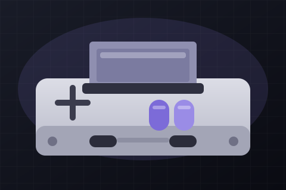
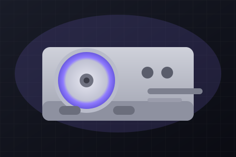
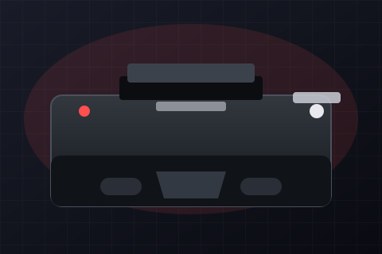

Index colecție / hardware
Hub-ul de hardware
Alege o rază din arhivă. Fiecare intrare mapează mașina către ADN-ul ei tehnic, momentul cultural și amintirile pe care le-a făcut posibile.
Expoziții deschise
06 înregistrate / 24 așteptând restaurare
-

-

-

-
 Nintendo
NintendoNintendo 64
Patru porturi de controller care au transformat sala de living într-un bracket.
-

-
 Nintendo
NintendoGame Boy Advance
O bibliotecă de 32-biți de dimensiune de buzunar pentru colțuri tîlși și călători lungi.
Comparare rapidă
Șase mașini, una lângă alta.
| Sistem | An | Mediu | Titlu semnatură |
|---|---|---|---|
| Super NES | 1990 | Cartuș | Super Metroid |
| Sega Genesis | 1988 | Cartuș | Sonic the Hedgehog 2 |
| PlayStation | 1994 | CD-ROM | Metal Gear Solid |
| Nintendo 64 | 1996 | Cartuș | Mario Kart 64 |
| Dreamcast | 1998 | GD-ROM | Shenmue |
| Game Boy Advance | 2001 | Game Pak | Advance Wars |
Gabinet live / acces aleatoriu
Extrage o expoziție misterioasă
Apasă butonul și lasă arhiva să aleagă următorul tău destinație. Fiecare vizită ajunge la o mașină diferită.
Semnal blocat
ASTEPTÂND INTRARE
SISTEM GATA // 00:00:00